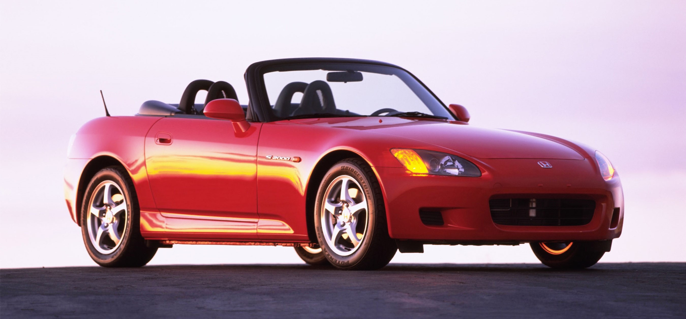
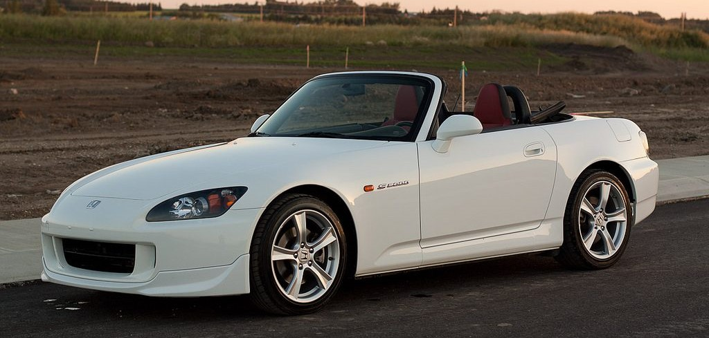
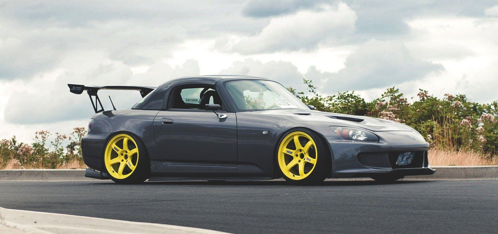

Honda S2000
Honda S2000 — спортивный автомобиль в кузове родстер, выпускавшийся компанией Honda с 1999 по 2009 года. Концепт автомобиля был впервые показан еще в 1995 году, на Токийском автосалоне. Начало выпуска серийного автомобиля было приурочено к 50-летию компании, также он явился продолжением серии родстеров S500, S600 и S800. Название S2000 подчёркивает объём двигателя в два литра, и является традицией для родстеров, начиная с 1960-х годов. Несколько изменений было внесено на протяжении всего производства автомобиля, в том числе сменились двигатель, коробка передач, подвеска, интерьер и экстерьер. Официально существовало два поколения: изначальная модель с кодом шасси AP1, и внешне похожая, обновленная модель (известная в США как AP2), получившая значительные изменения в трансмиссии и подвеске. Выпуск S2000 было прекращен в июне 2009 года, в Японии автомобиль продавался через дилерскую сеть Honda Verno.
Первое поколение:
Второе поколение:
Тюнинг:
